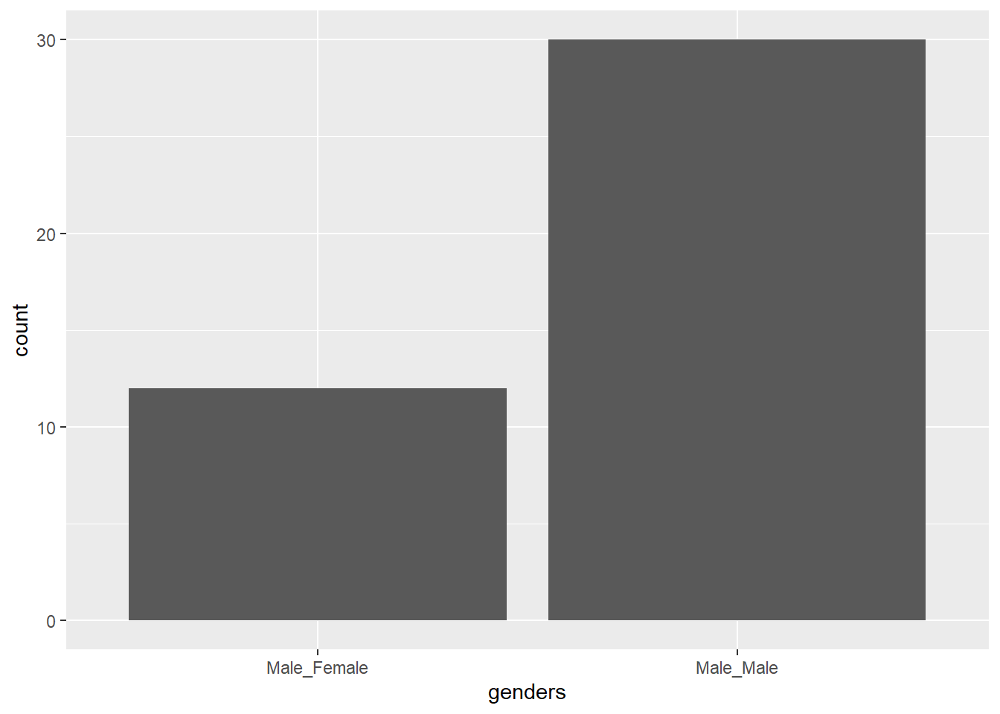

---- Compiling #TidyTuesday Information for 2021-07-13 ----
--- There is 1 file available ---
── Downloading files ───────────────────────────────────────────────────────────
1 of 1: "scoobydoo.csv"
scoobydoo <- tuesdata$scoobydoo
summary(scoobydoo)
index series_name network season
Min. : 1.0 Length:603 Length:603 Length:603
1st Qu.:151.5 Class :character Class :character Class :character
Median :302.0 Mode :character Mode :character Mode :character
Mean :302.0
3rd Qu.:452.5
Max. :603.0
title imdb engagement date_aired
Length:603 Length:603 Length:603 Min. :1969-09-13
Class :character Class :character Class :character 1st Qu.:1979-12-04
Mode :character Mode :character Mode :character Median :1988-09-10
Mean :1994-09-18
3rd Qu.:2011-12-09
Max. :2021-02-25
run_time format monster_name monster_gender
Min. : 4.00 Length:603 Length:603 Length:603
1st Qu.:12.00 Class :character Class :character Class :character
Median :22.00 Mode :character Mode :character Mode :character
Mean :23.52
3rd Qu.:23.00
Max. :94.00
monster_type monster_subtype monster_species monster_real
Length:603 Length:603 Length:603 Length:603
Class :character Class :character Class :character Class :character
Mode :character Mode :character Mode :character Mode :character
monster_amount caught_fred caught_daphnie caught_velma
Min. : 0.00 Length:603 Length:603 Length:603
1st Qu.: 1.00 Class :character Class :character Class :character
Median : 1.00 Mode :character Mode :character Mode :character
Mean : 1.75
3rd Qu.: 2.00
Max. :19.00
caught_shaggy caught_scooby captured_fred captured_daphnie
Length:603 Length:603 Length:603 Length:603
Class :character Class :character Class :character Class :character
Mode :character Mode :character Mode :character Mode :character
captured_velma captured_shaggy captured_scooby unmask_fred
Length:603 Length:603 Length:603 Length:603
Class :character Class :character Class :character Class :character
Mode :character Mode :character Mode :character Mode :character
unmask_daphnie unmask_velma unmask_shaggy unmask_scooby
Length:603 Length:603 Length:603 Length:603
Class :character Class :character Class :character Class :character
Mode :character Mode :character Mode :character Mode :character
snack_fred snack_daphnie snack_velma snack_shaggy
Length:603 Length:603 Length:603 Length:603
Class :character Class :character Class :character Class :character
Mode :character Mode :character Mode :character Mode :character
snack_scooby unmask_other caught_other caught_not
Length:603 Mode :logical Mode :logical Mode :logical
Class :character FALSE:568 FALSE:519 FALSE:572
Mode :character TRUE :35 TRUE :84 TRUE :31
trap_work_first setting_terrain setting_country_state suspects_amount
Length:603 Length:603 Length:603 Min. : 0.000
Class :character Class :character Class :character 1st Qu.: 1.000
Mode :character Mode :character Mode :character Median : 3.000
Mean : 2.851
3rd Qu.: 4.000
Max. :20.000
non_suspect arrested culprit_name culprit_gender
Length:603 Length:603 Length:603 Length:603
Class :character Class :character Class :character Class :character
Mode :character Mode :character Mode :character Mode :character
culprit_amount motive if_it_wasnt_for and_that
Min. : 0.00 Length:603 Length:603 Length:603
1st Qu.: 0.00 Class :character Class :character Class :character
Median : 1.00 Mode :character Mode :character Mode :character
Mean : 1.04
3rd Qu.: 1.00
Max. :11.00
door_gag number_of_snacks split_up another_mystery
Mode :logical Length:603 Length:603 Length:603
FALSE:544 Class :character Class :character Class :character
TRUE :59 Mode :character Mode :character Mode :character
set_a_trap jeepers jinkies my_glasses
Length:603 Length:603 Length:603 Length:603
Class :character Class :character Class :character Class :character
Mode :character Mode :character Mode :character Mode :character
just_about_wrapped_up zoinks groovy
Length:603 Length:603 Length:603
Class :character Class :character Class :character
Mode :character Mode :character Mode :character
scooby_doo_where_are_you rooby_rooby_roo batman scooby_dum
Length:603 Length:603 Mode :logical Mode :logical
Class :character Class :character FALSE:599 FALSE:586
Mode :character Mode :character TRUE :4 TRUE :17
scrappy_doo hex_girls blue_falcon fred_va
Mode :logical Mode :logical Mode :logical Length:603
FALSE:438 FALSE:597 FALSE:570 Class :character
TRUE :165 TRUE :6 TRUE :33 Mode :character
daphnie_va velma_va shaggy_va scooby_va
Length:603 Length:603 Length:603 Length:603
Class :character Class :character Class :character Class :character
Mode :character Mode :character Mode :character Mode :character
# what are the most common monster types, names from TV episodes?# figure out how to get this for all monsters (not just monster1)scoobydoo2 |>count(monster1_monster_name) |>filter(n >1) |>mutate(monster1_monster_name =fct_reorder(monster1_monster_name, n)) |>ggplot(aes(y=monster1_monster_name, x = n))+geom_col()+labs(title ="Most Common Monster Names")
scoobydoo2 |>count(monster1_monster_type) |>filter(n >1) |>mutate(monster1_monster_type =fct_reorder(monster1_monster_type, n)) |>ggplot(aes(y=monster1_monster_type, x = n))+geom_col()+labs(title ="Most Common Monster Types")
# are monsters real or not?ggplot(scoobydoo2, aes(x=monster_real, fill = monster1_monster_type))+geom_bar(color ="white")
# A tibble: 29 × 2
series_name n
<chr> <int>
1 Scooby-Doo and Scrappy-Doo (second series) 86
2 Be Cool, Scooby-Doo! 53
3 Scooby-Doo Mystery Incorporated 52
4 Laff-a-Lympics 48
5 Warner Home Video 42
6 What's New Scooby-Doo? 42
7 Scooby-Doo and Guess Who? 41
8 The Scooby-Doo Show 40
9 A Pup Named Scooby-Doo 30
10 Shaggy & Scooby-Doo Get a Clue! 26
# ℹ 19 more rows
scoobydoo |>group_by(season) |>summarize(n =n())
# A tibble: 7 × 2
season n
<chr> <int>
1 1 311
2 2 164
3 3 60
4 4 5
5 Crossover 8
6 Movie 42
7 Special 13
scoobydoo |>group_by(format) |>summarize(n =n())
# A tibble: 5 × 2
format n
<chr> <int>
1 Crossover 8
2 Movie 43
3 Movie (Theatrical) 3
4 TV Series 374
5 TV Series (segmented) 175
# so we should probably focus on tv episodes and not movies?
# filter to be just seasonsscoobydoo_tv <- scoobydoo |>filter(season %in%c("1", "2", "3", "4"))scoobydoo_tv |>group_by(season) |>summarize(n =n())
# A tibble: 4 × 2
season n
<chr> <int>
1 1 311
2 2 164
3 3 60
4 4 5
# i'm not well-versed enough on scoobydoo...why does season 4 only have 5 episodes?scoobydoo_tv |>filter(season =="4")
# A tibble: 5 × 75
index series_name network season title imdb engagement date_aired run_time
<dbl> <chr> <chr> <chr> <chr> <chr> <chr> <date> <dbl>
1 329 A Pup Named S… ABC 4 The … 7.2 40 1991-08-03 23
2 330 A Pup Named S… ABC 4 Catc… 6.6 37 1991-08-10 4
3 331 A Pup Named S… ABC 4 The … 6.6 37 1991-08-10 11
4 332 A Pup Named S… ABC 4 The … 6.6 37 1991-08-10 8
5 333 A Pup Named S… ABC 4 Mayh… 7.2 32 1991-08-17 23
# ℹ 66 more variables: format <chr>, monster_name <chr>, monster_gender <chr>,
# monster_type <chr>, monster_subtype <chr>, monster_species <chr>,
# monster_real <chr>, monster_amount <dbl>, caught_fred <chr>,
# caught_daphnie <chr>, caught_velma <chr>, caught_shaggy <chr>,
# caught_scooby <chr>, captured_fred <chr>, captured_daphnie <chr>,
# captured_velma <chr>, captured_shaggy <chr>, captured_scooby <chr>,
# unmask_fred <chr>, unmask_daphnie <chr>, unmask_velma <chr>, …
scooby_snacks |>mutate(number_of_snacks =str_sub(number_of_snacks, start =0, end =1)) |>filter(number_of_snacks !="a", number_of_snacks !="l", number_of_snacks !="N", number_of_snacks !="s", number_of_snacks !="t") |>group_by(series_name) |>mutate(total_snacks =sum(as.numeric(number_of_snacks))) |># fix these numbersmutate(n_episodes =n()) |>ggplot(aes(x=total_snacks, y =series_name))+geom_col()+geom_label(aes(label = n_episodes, x =10))+labs(title ="Number of Snacks Eateneaten in each series",subtitle ="number of episodes displayed at the right")

Source Code
---title: "SarahR"format: html---```{r}# load data and packageslibrary(tidyverse)library(tidytuesdayR)tuesdata <- tidytuesdayR::tt_load(2021, week =29)scoobydoo <- tuesdata$scoobydoo``````{r}summary(scoobydoo)``````{r}scoobydoo |>filter(monster_amount >16) |>select(title, contains("monster"))ggplot(scoobydoo, aes(x=monster_amount))+geom_bar()``````{r, fig.width = 12}scoobydoo |> filter(imdb != "NULL") |> ggplot(aes(x=imdb, group=series_name, fill = series_name))+ geom_histogram(stat="count", binwidth = 1)+ theme(legend.position = "bottom")``````{r}# individual monsters of TV seriesscoobydoo2 <- scoobydoo |>filter(season %in%c("1", "2","3", "4"), format =="TV Series") |>filter(monster_name !="NULL") |>mutate(monster_name =str_replace(monster_name, "Dr. Phineus Phibes,Agent 1,Agent 2,Agent 3,Agent 4,Agent 5,Agent 6,Agent 7,Agent,8,Agent,9,Agent 10,Agent 11,Agent 12,Agent 13,Dr. Trebal", "Dr. Phineus Phibes,Agent 1,Agent 2,Agent 3,Agent 4,Agent 5,Agent 6,Agent 7,Agent 8,Agent 9,Agent 10,Agent 11,Agent 12,Agent 13,Dr. Trebal")) |>select(title, season, series_name, contains("monster")) |>pivot_longer(cols =c(monster_name, monster_gender, monster_type, monster_subtype, monster_species), names_to ="monster_var", values_to ="monster") |>separate(monster, c("monster1", "monster2", "monster3", "monster4", "monster5", "monster6", "monster7", "monster8", "monster9", "monster10", "monster11", "monster12", "monster13", "monster14", "monster15", "monster16"), sep =",") |>pivot_wider(names_from = monster_var, values_from = monster1:monster16) `````` {r}# what are the most common monster types, names from TV episodes?# figure out how to get this for all monsters (not just monster1)scoobydoo2 |> count(monster1_monster_name) |> filter(n > 1) |> mutate(monster1_monster_name = fct_reorder(monster1_monster_name, n)) |> ggplot(aes(y=monster1_monster_name, x = n))+ geom_col()+ labs(title = "Most Common Monster Names")scoobydoo2 |> count(monster1_monster_type) |> filter(n > 1) |> mutate(monster1_monster_type = fct_reorder(monster1_monster_type, n)) |> ggplot(aes(y=monster1_monster_type, x = n))+ geom_col()+ labs(title = "Most Common Monster Types")# are monsters real or not?ggplot(scoobydoo2, aes(x=monster_real, fill = monster1_monster_type))+ geom_bar(color = "white")`````` {r}scoobydoo |> group_by(series_name) |> summarize(n = n()) |> arrange((desc(n)))scoobydoo |> group_by(season) |> summarize(n = n()) scoobydoo |> group_by(format) |> summarize(n = n())# so we should probably focus on tv episodes and not movies?``````{r}# filter to be just seasonsscoobydoo_tv <- scoobydoo |>filter(season %in%c("1", "2", "3", "4"))scoobydoo_tv |>group_by(season) |>summarize(n =n())# i'm not well-versed enough on scoobydoo...why does season 4 only have 5 episodes?scoobydoo_tv |>filter(season =="4")``````{r}ggplot(scoobydoo_tv, aes(x=run_time))+geom_histogram()scoobydoo_tv |>filter(series_name =="A Pup Named Scooby-Doo") |>summarize(sum =sum(run_time))``````{r}scoobydoo_tv |>group_by(series_name, season) |>summarize(length =sum(run_time), .groups ="drop") |>group_by(series_name) |>mutate(total_length =sum(length)) |>ungroup() |>mutate(series_name =fct_reorder(series_name, total_length)) |>mutate(season =factor(season, levels=sort(unique(season), decreasing =TRUE))) |>ggplot(aes(x = series_name, y = length, fill = season)) +geom_col(color ="white", linewidth =0.25) +coord_flip() +geom_text(aes(label = length), position =position_stack(vjust =0.5), size =2.75, color ="black") +geom_label(aes(label = total_length, y =1250), size =3, fill ="white")+labs(title ="Scooby-Doo Series Runtime by Season",subtitle ="Total Series Runtime at the Right",x ="Series Name",y ="Total Runtime",fill ="Season")``````{r}# snacks!scooby_snacks <- scoobydoo_tv |>select(index, series_name, title, season, contains("snack"))scooby_snacks |>select(contains("snack")) |>mutate(velma_snacks =str_count(snack_velma, "TRUE"),fred_snacks =str_count(snack_fred, "TRUE"),daphnie_snacks =str_count(snack_daphnie, "TRUE"),shaggy_snacks =str_count(snack_shaggy, "TRUE"),scooby_snacks =str_count(snack_scooby, "TRUE")) |>summarize(total_velma =sum(velma_snacks),total_fred =sum(fred_snacks),total_daphnie =sum(daphnie_snacks),total_shaggy =sum(shaggy_snacks),total_scooby =sum(scooby_snacks)) |>pivot_longer(cols =1:5, names_to ="char", values_to ="n_snacks") |>ggplot(aes(x=char, y = n_snacks))+geom_col()scooby_snacks |>mutate(number_of_snacks =str_sub(number_of_snacks, start =0, end =1)) |>filter(number_of_snacks !="a", number_of_snacks !="l", number_of_snacks !="N", number_of_snacks !="s", number_of_snacks !="t") |>group_by(series_name) |>mutate(total_snacks =sum(as.numeric(number_of_snacks))) |># fix these numbersmutate(n_episodes =n()) |>ggplot(aes(x=total_snacks, y =series_name))+geom_col()+geom_label(aes(label = n_episodes, x =10))+labs(title ="Number of Snacks Eateneaten in each series",subtitle ="number of episodes displayed at the right")```